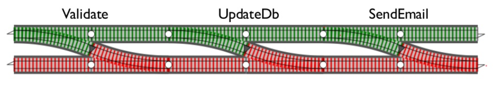

Monads in Ruby
By Victor Zagorodny
I work @ Sloboda Studiopost.vittorius@gmail.com
https://twitter.com/vittoriuz
https://github.com/vittorius

Monads: what is it?

A monad is a monoid in the category of endofunctors, what's the problem?
Monads: what is it?
Monads: why?
Lazy Evaluation
Example #1 (pseudocode):
let numbers = [1, ...]
fun is_prime x = all (map (y -> x mod y <> 0) [2..x-1])
let primes = filter is_prime numbers
let tenth_prime = first (take primes 10)
print tenth_prime
Example #2:
if user.signed_in? && user.current_order&.pending?
# ...
Welcome to the future
f = Future.new do
# executed asynchronously
end
f.complete? # non-blocking
f.on_complete do |value|
# called upon completion; preferred approach
end
f.value # blocks until complete; less preferred approach
An ugly example
users = UsersService.all
archived_users = ArchivedUsersService.for_last_month
(users + archived_users).select(&:active?).size
Functionally beautiful example
count(
only_active(
concat(
Future.new { UsersService.all },
Future.new { ArchivedUsersService.for_last_month }
)
)
)
Functionally beautiful example
count_f(
only_active_f(
concat_f(
Future.new { UsersService.all },
Future.new { ArchivedUsersService.for_last_month }
)
)
)
Ingredients: unit
(aka "bind", "return")
f = Future.new(x)
# or
f = Future.new
f.complete_with(x)
f.value # doesn't block
f.complete? # == true
class Future
# unit : Value -> Future<Value>
def self.unit(value)
Future.new(value)
end
end
Ingredients: fmap
# count_f : Future<Enumerable> -> Future<Integer>
def count_f(future)
future.fmap(
# f: Enumerable -> Integer
->(enumerable) { enumerable.count }
)
end
class Future
# ...
# fmap: Func<Value, Value> -> Future<Value>
def fmap(func)
f_new = Future.new
on_complete do |value|
f_new.complete_with(func.call(value))
end
f_new
end
end
Ingredients: fmap
# only_active_f : Future<Enumerable> -> Future<Enumerable>
def only_active_f(future)
future.fmap(
# f: Enumerable -> Enumerable
->(enumerable) { enumerable.select(&:active?) }
)
end
Chaining futures
f = Future.new { UsersService.all }.fmap(
# f: Enumerable -> Future<Profile>
->(users) {
Future.new { ProfileService.profile_for(users.first) }
}
)
f.value # let's get the profile of a first user...
oops...
class Future
def fmap(func)
f_new = Future.new
on_complete do |value|
f_new.complete_with(func.call(value)) # it's a Future!
end
f_new
end
end
Ingredients: flatten
(aka "join")
Ingredients: bind
(aka "flatMap")
Chaining futures correctly
f = Future.new { UsersService.all }.bind(
# f: Enumerable -> Future<Profile>
->(users) {
Future.new { ProfileService.profile_for(users.first) }
}
)
# fmap(func).flatten was called under the hood
f.value # now it's the Profile
Two important things
-
Future is a monad
Just believe me -
I won't tell you how we built the
concat_ffunction
But I can give some clues
Lifting
count -> lift -> count_f
def lift(func)
->(future) { future.fmap(func) }
end
concat -> lift2 -> concat_f
# Func<Value, Value, Value>
# -> Func<Future<Value>, <Future<Value>, <Future<Value>>
def lift2(func) # aka "liftM2"
# ...
end
Monad: definition (at last)
- It's a data type
- It's a container for some (immutable) value
-
It has a
unitoperation defined which wraps a value in it -
It has a
bindoperation defined which allows building a chain of transformations over a monadic value
All of these make monad a "programmable semicolon"
Example: maybe monad
class Maybe
attr_reader :value
class Some < Maybe
def initialize(value)
@value = value
end
end
class None < Maybe; end
end
Example: maybe monad
class Maybe
# "unit" function
def self.[](value)
value.nil? ? None.new : Some.new(value)
end
def bind(func)
is_a?(None) ? self : func.call(self.value)
end
alias_method :>=, :bind
end
Example: maybe monad (usage)
Example: maybe monad (usage)
Maybe monad
maybe_user = Maybe(user).bind do |u|
Maybe(u.address).bind do |a|
Maybe(a.street)
end
end
# If user with address exists
=> Some("Street Address")
# If user or address is nil
=> None()
Either monad
Looks familiar?
Try monad
res = Try() { 10 / 2 }
res.value if res.success?
# => 5
res = Try() { 10 / 0 }
res.exception if res.failure?
# => #<ZeroDivisionError: divided by 0>
Try(NoMethodError, NotImplementedError) { 10 / 0 }
# => raised ZeroDivisionError: divided by 0 exception
And others
- List
- Continuation
- ?
Monads in Ruby: editor's pick
-
monadic
Maybe, Either monads. Looks like it's not supported anymore. -
deterministic
Option (actually, it's Maybe), Either, Result (similar to Either). Almost no contributions are made for a long time. -
monads
Option (aka Maybe), Many (aka List), Eventually (aka Continuation). Is a demo for the conference talk, but very clean and usable yet without any observable activity. -
kleisli
Maybe, Either, Try, Future, functional composition operators. Good quality code but is abandoned in favor of its successor, dry-monads. -
dry-monads
Maybe, Either, Try, List. Used by dry-rb ecosystem, most notable example is dry-transactions. Fairly good and regular support. Has its community and used in real projects.
Monads in Ruby: honorable mentions
-
solid_use_case
One of the first gems in the field, was mentioned in a famous talk Railway-Oriented programming -
Remember, you can always write your own
Thank you!
Questions?